Class 10 Lecture Demonstration Lab
Spring 2026 | UENV 3200 - CRN 11009 + UURB 3210 - CRN 111008
Remote Sensing Landsat ARD - Surface Temperature & Spectral Indices for Urban Spaces
Landsat ARD Coverage Extent
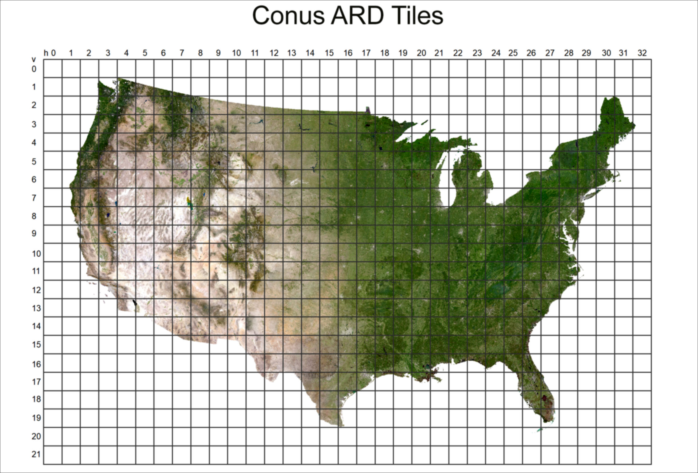
Concepts & Themes
This week’s lab will feature exploration of 2 raster processes:
- Application of Spectral Indices to Landsat ARD imagery
- Utilization of Surface Temperature produce from Landsat ARD
Data
During this week’s Lecture Demo Lab will utilize the following data:
Part I
Spectral Indices
What is a spectral index?
A spectral index is a mathematical equation that is applied on the various spectral bands of an image per pixel.
The most common mathematical formulas that are used is the normalized difference:
(Bx - By)/(Bx + By)In practical terms, this is the difference between two selected bands normalized by their sum. This type of calculus is very useful to minimize (as much as possible) the effects of illumination (shadows in mountainous regions, cloud shadows, etc) and enhance spectral features that are not visible initially. In other words, the calculation ‘normalizes’ the image, resulting in scaled values and a easily understood color ramp.
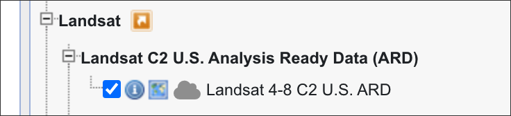
Utilize the horizontal and vertical position of the ARD Grid to produce results just for that one grid space. For the lecture demo, the urban area of interest is Springfield, Missouri which has a Horizontal ID of 18, and Vertical ID of 11:
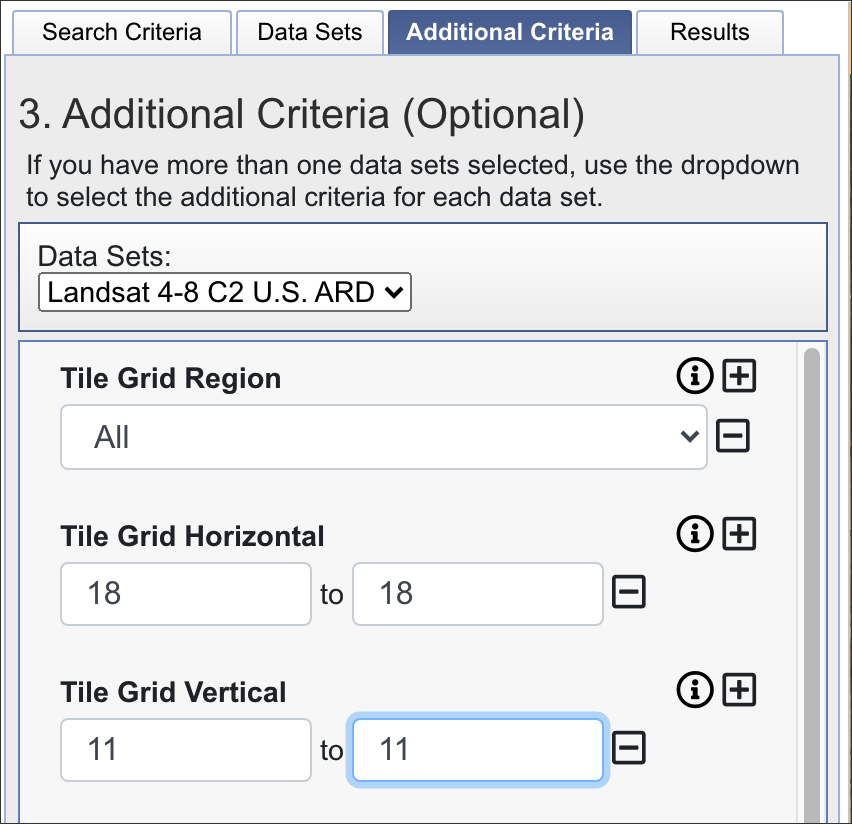
Next, the following three conditions are met from the returned results:
- Cloud-free over Area of Interest - AOI - Springfield, Missouri.
- The tile preview shows full pixel coverage over AOI.
- The ARD tile date is within ‘the growing season’, i.e. approximately late May through early August. This is necessary as the analysis will feature spectral indices for vegetative cover, and we need the coverage to occur during the general growing season, not dormant seasons.
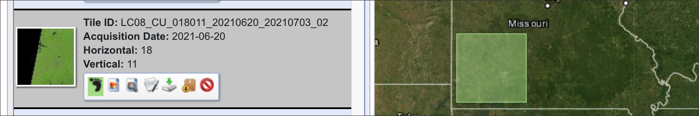
The Download features two products - the Surface Reflectance Values; and secondly the Surface Temperature values:
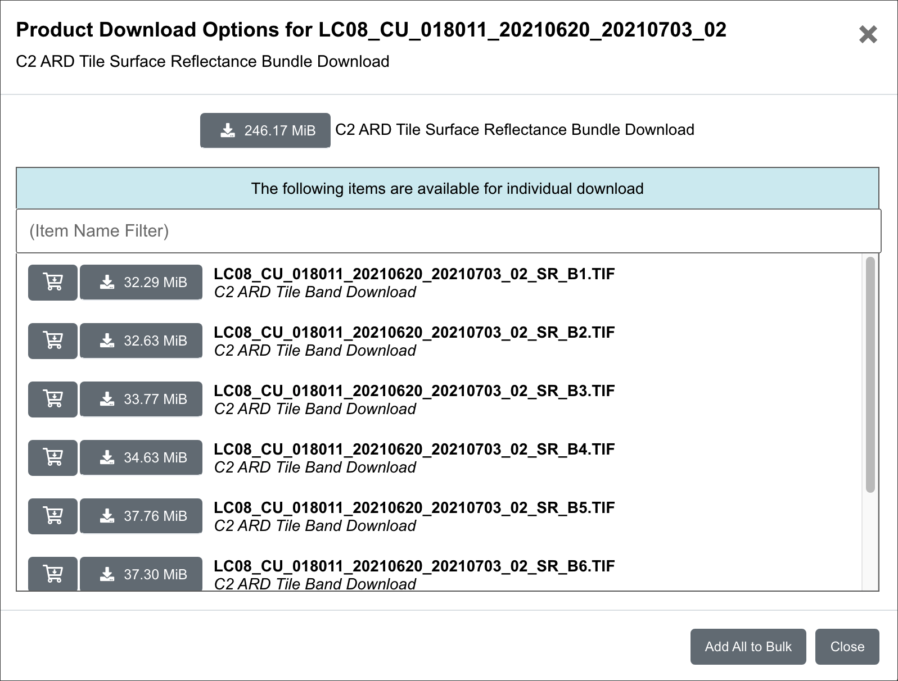
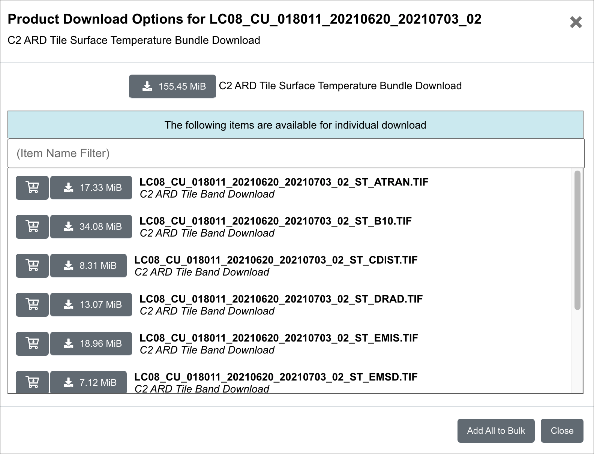
To Start, the Surface Reflectance Values band 1 - 7 have been composited into SR_springfield_composite.tif located in the Part I directory. We can set the band combination to 5/4/3 to see the vegetative cover in/around the city relative to impervious surfaces:
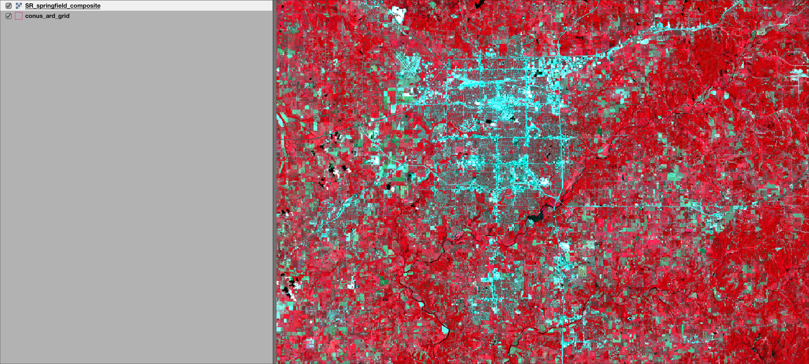
5/4/3To create a spectral index, we need to access the original bands in the imagery. To start, we will import the bands necessary for the first spectral index of the lecture demo - NDVI. To follow, the bands shown in the layers panel along with the NDVI formula:
NDVI = (NIR Band - Red Band / (NIR Band + Red Band)As translated to the Landsat 8 band numbers:
NDVI = (Band 5 – Band 4) / (Band 5 + Band 4)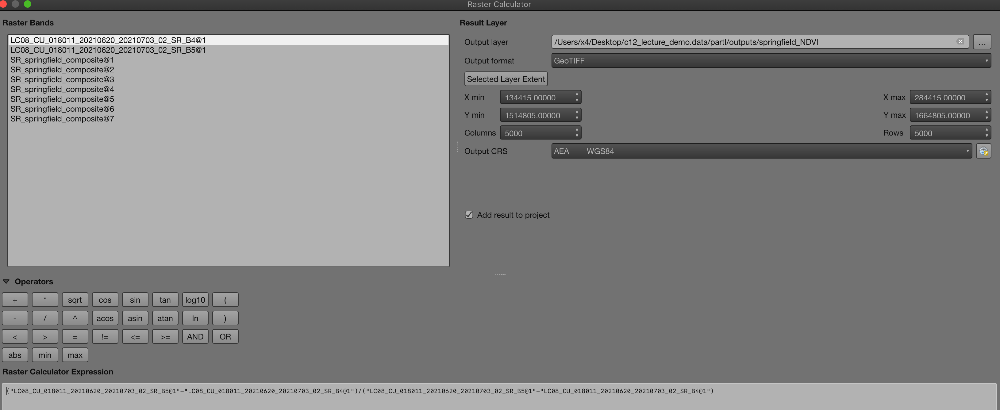
The following formula utilizes the bands as separate of the composite imagery SR_springfield_composite.tif:
("LC08_CU_018011_20210620_20210703_02_SR_B5@1"-"LC08_CU_018011_20210620_20210703_02_SR_B4@1")/("LC08_CU_018011_20210620_20210703_02_SR_B5@1"+"LC08_CU_018011_20210620_20210703_02_SR_B4@1")Review the results with symbolization applied for values within the NDVI Index:
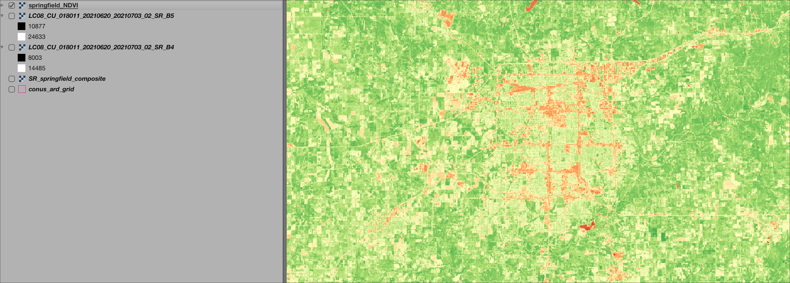
The following graphic is useful to interpret the resulting NDVI values relative to vegetative cover:
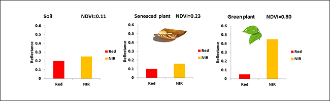
Next, the same process of band combinations will be made, but this time for the The Normalized Difference Built-up Index (NDBI), which uses the the NIR and SWIR bands to emphasize manufactured built-up areas:
NDBI = (SWIR - NIR) / (SWIR + NIR)As translated to the Landsat 8 band numbers:
NDBI = (Band 6 – Band 5) / (Band 6 + Band 5)The following formula utilizes the bands as separate of the composite imagery SR_springfield_composite.tif:
("LC08_CU_018011_20210620_20210703_02_SR_B6@1" - "LC08_CU_018011_20210620_20210703_02_SR_B5@1") / ("LC08_CU_018011_20210620_20210703_02_SR_B6@1" + "LC08_CU_018011_20210620_20210703_02_SR_B5@1")Review the results with symbolization applied for values within the NBDI Index. Notice the very close coorespondence with high built-up values with low NDVI values:
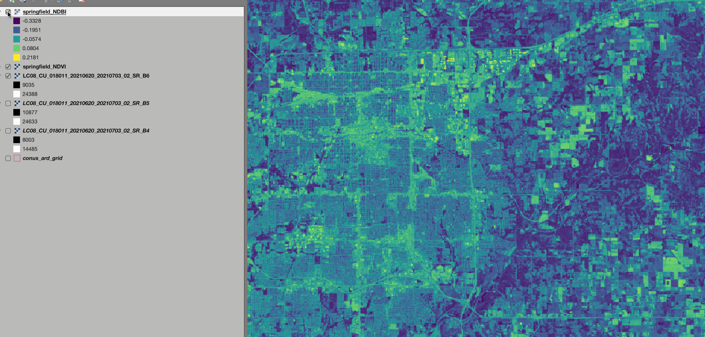
Part II
Land Surface Temperature
Working with remote sensed imagery in a desktop environment typically involves much pre-processing work devoted to conversions and corrections. This paper does an excellent job of summarizing these pre-processing tasks for Landsat imagery:
One of the more onerous analysis tasks is the pre-processing of imagery for Land Surface Temperature - a topic that is trending for all the wrong reasons due to climate change coupled with social, demographic and built environmental inequities, especially in large cities.
Utilizing the ARD dataset for Landsat imagery, a good portion of pre-processing work has been completed by Landsat/USGS.
Currently in tar.gz compression, the directory is unzipped, and the ST raster is isolated. This raster is imported into QGIS via the Data Source Manager as a typical raster product:
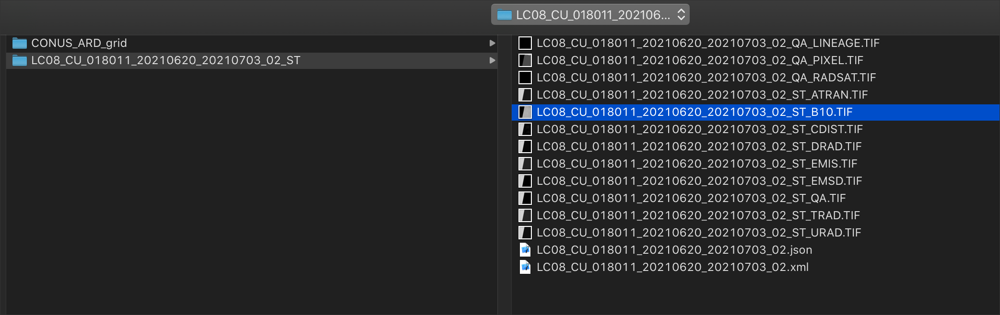
Based on the metadata/product guide, the thematic of this raster layer is as follows:
Also noted in the guide is a scale factor that is utilized for the product.
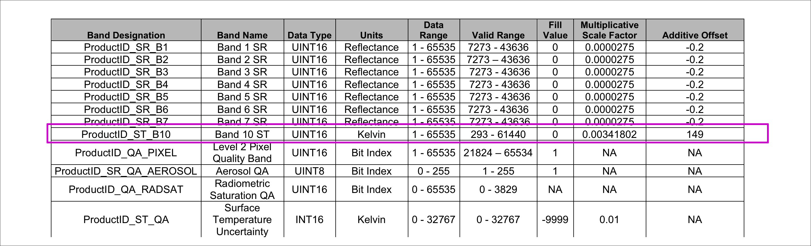
ST Band 10 in QGIS, Layers Panel:
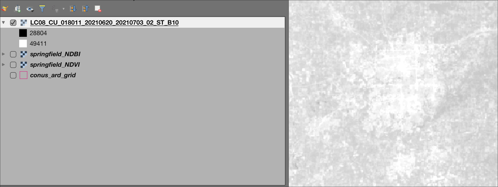
Here the digital numbers need to be scaled accordingly. If the value is to be expressed in Celcius or Fahrenheit, a further conversion needs to take place via the Raster Calculator. This will be accomplished in two steps:
Scale the raster values in raster calculator
Apply the following temperature conversion where
Kis the scaled raster values andFis the Fahrenheit temperature measurement:F = 1.8(K - 273) + 32
To Start, open the Raster Calculator and apply the following scale factor and offset value as noted in the product metadata, exporting the product to the data folder as st_scaled:
"LC08_CU_018011_20210620_20210703_02_ST_B10@1" * 0.00341802 + 149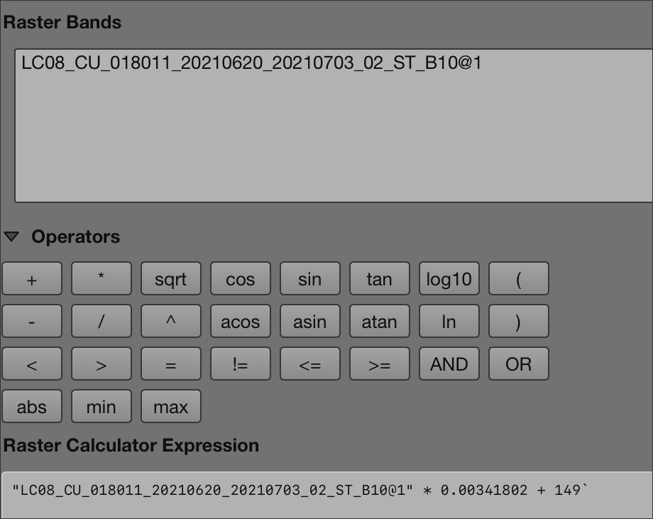
Next, apply the temperature conversion based on the formula for kelvin to fahrenheit units, and output as st_fahrenheit:
1.8 * ("st_scaled@1" - 273) + 32Review the resulting raster values, Kelvin vs Fahrenheit:
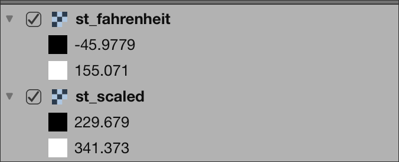
Utilize QuickMapServices plugin to compare high and low ST values relative to landcover:
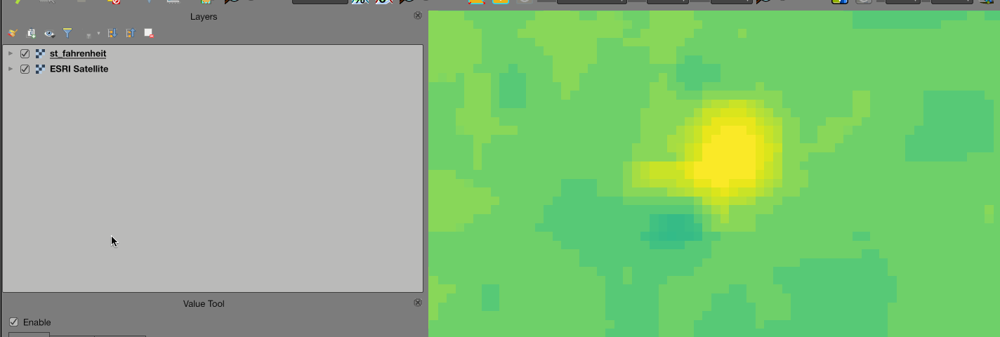
Finally, compare high resolution base imagery to NDVI to ST values:
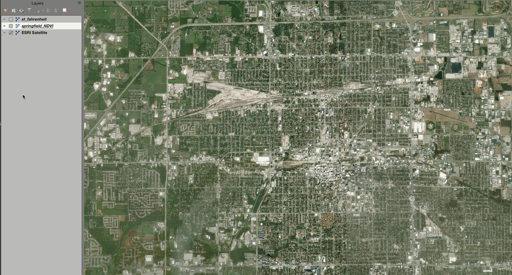